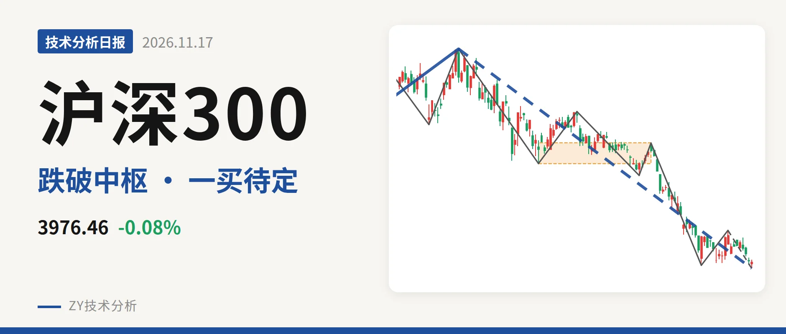
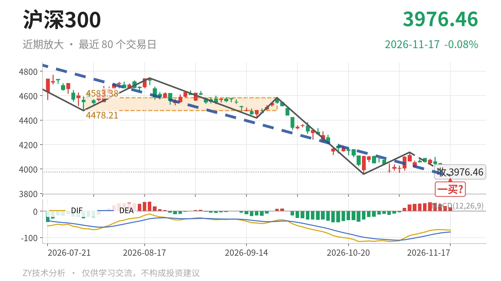

沪深300｜跌破中枢下沿，3942.38点暂定一买

最近日线中枢 4478.21—4583.38点，收盘位于中枢之下
一句话：日线下跌段未结束，新低暂现盘整背驰一买
📉 走势结构：上涨后的回落仍在延续
当前处在日线下跌段中，更大级别上涨尚未被破坏，先按上涨中的回落处理。更大级别看，3108.35点到5064.27点这轮约63%的上涨还在延续，因此6月23日以来的下跌只能先当作回落。日线线段上，3月24日至6月23日上涨线段已在5064.27点结束，6月23日至11月17日下跌线段从5064.27点落到3942.38点，跌约22.2%，这段仍在延续。

📍 中枢与位置：跌破最近中枢下沿
最新收盘3976.46点已经跌破最近日线笔中枢下沿。该中枢是7月30日至9月22日形成的4478.21—4583.38点，尚未完成；收盘低于下沿约11.2%。中枢从2月3日至3月17日的4578.21—4720.86点下移到4478.21—4583.38点，属于中枢下移。当前价格重新回到2024年10月8日至2025年5月30日的日线笔中枢3812.32—4200.91点内部，略低于中轴4006.61点。
🧭 买卖点：3942点只是暂定一买
11月17日最低3942.38点构成日线笔级别一买（盘整背驰），但它所在11月5日至11月17日下跌笔还在延续，因此只能作暂定的一买，会随该笔延续而变化。6月23日创出5064.27点新高后，1月13日4836.95点一卖、2月25日4766.56点二卖、3月17日4720.86点类二卖只对应较小级别。11月17日新低3942.38点出现后，3月24日4394.29点一买与6月8日4677.57点二买同样只对应较小级别。

⚖️ 背驰：新低不新弱
本轮最关键的背驰出现在最近两组下跌笔之间。9月22日至10月23日下跌笔从4583.38点跌至3958.14点，绿柱面积494，DIF低点-115.1。11月5日至11月17日下跌笔从4136.80点跌至3942.38点，价格小幅新低，但绿柱面积只有0，DIF低点-92.5，明显高于-115.1。这是新低不新弱，对应暂定的一买。该下跌笔仍在延续，背驰以当前仍在延续的走势为准。日线MACD仍处零轴下方，DIF-71.8，DEA-78.9，只能先看作弱背。
🧿 关键位置观察：看4201和4478点
当前反抽的关键结构位在4201点附近和4478点附近。若连4201点附近都站不上，价格仍在2024年10月8日至2025年5月30日中枢内部偏弱震荡。若重新站上4478点，6月23日以来的回落更可能只是中枢扩展。若反抽回不到4478点上方，则在结构上形成第三类卖点信号，中枢下移仍难扭转。当前结构偏弱：弱在价格仍在4478点下方，日线下跌段还在延续，MACD还在零轴下方。
⚠️ 本文为基于公开行情数据的缠论技术结构记录，由程序自动计算并生成，仅供学习交流，不构成任何投资建议。市场有风险，投资需谨慎。